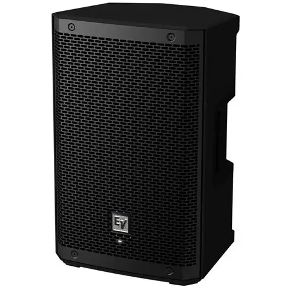
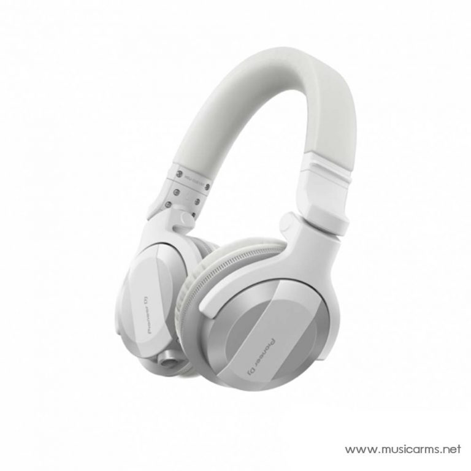
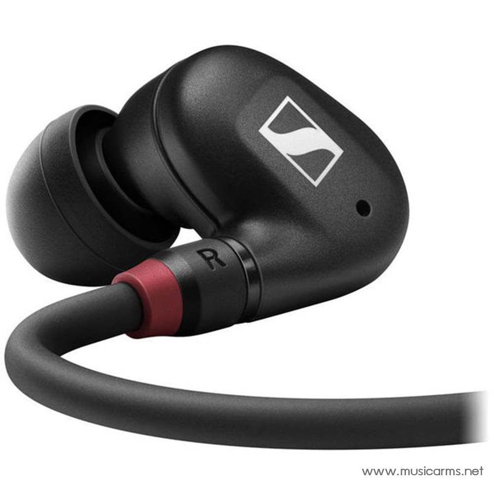
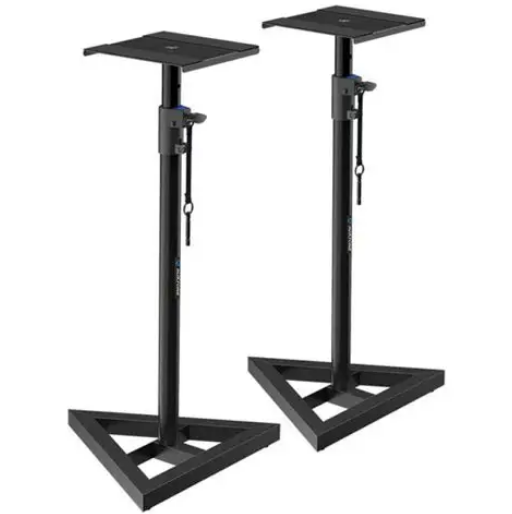

หูฟังและลำโพง

Electro-Voice ZLX-8P G2 ตู้ลำโพง Active Speaker
ราคา: 21,900 บาท
- การตอบสนองความถี่: 58 เฮิรตซ์ – 20,000 เฮิรตซ์
- ความถี่ครอสโอเวอร์: 1.4kHz
- ความดัง: 126dB
- ขนาดวูฟเฟอร์: 8”
- กำลังไฟฟ้า: 1000W
- วัสดุ: โพรพิลีน

Pioneer DJ HDJ-CUE1 BT หูฟังครอบหู On Ear Headphone
ราคา: 3,690 บาท
- หูฟังไดนามิกแบบ Closed
- ไดรเวอร์แบบโดม 40 มม.
- สายขดสั้น 1.2 ม. (ขยายความยาวได้ 1.8 ม.)
- ช่วงความถี่ 5 – 30,000 เฮิรตซ์
- น้ำหนัก (ไม่รวมสาย) 215 กรัม

Sennheiser IE 100 PRO หูฟังอินเอียร์ In Ear Headphones
1,400 บาท
- หูฟังอินเอียร์แบบไดนามิก
- ความต้านทาน: 20 โอห์ม
- ช่วงความถี่ : 20 – 18,000 Hz
- ระดับความดังของเสียง (SPL): 115 dB (1 kHz / 1 Vrms)
- ปัจจัย Distortion ที่ 1 kHz: < 0.1 % (1 kHz, 94 dB)

Roxtone PSS110KIT อุปกรณ์เสริมตู้ลำโพง
ราคา: 230 บาท
- ปรับความสูงได้หลายระดับ ตั้งแต่ 79-132 ซม.
- พื้นผิวแผ่นวางลำโพงเคลือบยาง ป้องกันรอยขีดข่วนและเพิ่มการยึดเกาะ
- ฐานสามเหลี่ยมช่วยเพิ่มความมั่นคงให้กับลำโพง
- หมาะสำหรับใช้ในงานบันทึกเสียงที่บ้านและสตูดิโอ
- บรรจุ 2 ชิ้นต่อกล่อง